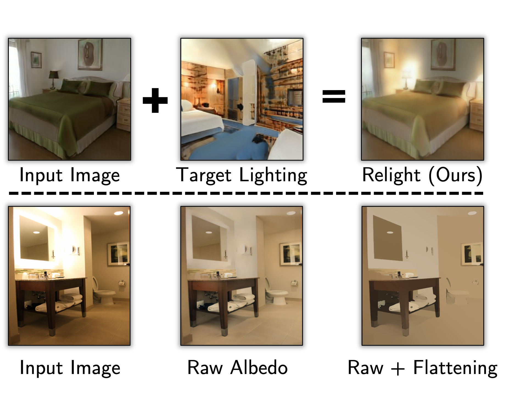
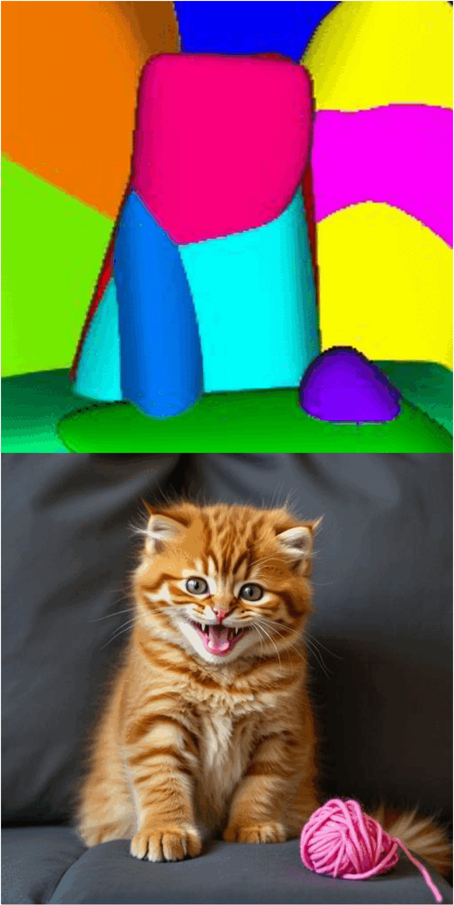
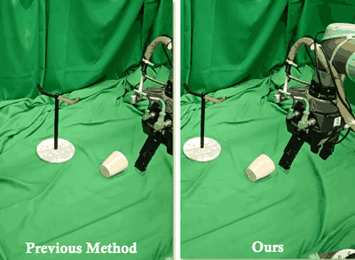
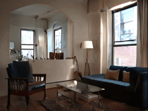

Research HighlightsAll publications →
PowerSimarXiv 2026 · PreprintDifferentiable physics simulation and rendering with power diagrams.
FracGenarXiv 2026 · PreprintHow objects stretch and tear: physics-informed video generation.
Shadows Don't LieCVPR 2024Generative models don't know projective geometry.
OpenTacPreprint 2026An open ecosystem for 3D tactile skins on any robot surface.

StyleGAN KnowsNeurIPS 2023Normals, depth, and albedo read straight out of StyleGAN.

Intrinsic LoRACVPR-W 2024What generative models know: intrinsic images with a tiny LoRA.
PrincipiaNeurIPS 2026Relational physics tests for video models.
Single input image
Generative CinematographerarXiv 2026 · PreprintCompose camera and object motion in 3D from a single image.
SyncLightNeurIPS 2026Relight one view; the edit propagates to every view in a single step.
Thinking in BoxesNeurIPS 20263D editing in real images, made easy with coarse boxes.
Visual JengaNeurIPS 2025Object dependencies via counterfactual inpainting.

Latent IntrinsicsNeurIPS 2024 · SpotlightAlbedo emerges from training to relight.

Generative Blocks WorldICLR 2026Move things around in pictures.

Know Your CameraICRA 2026 · Best Paper AwardCamera-conditioned, view-invariant robot policies.

DIVeRCVPR 2022 · Best Paper FinalistReal-time, accurate NeRF with deterministic integration.

LumiNetCVPR 2025Latent intrinsics meet diffusion for indoor relighting.
StyLitGANCVPR 2024Image-based relighting via latent control.